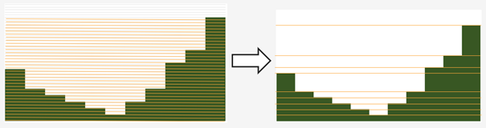
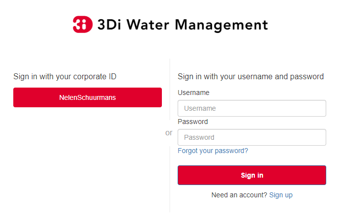

Release notes
3Di general releases
February 6th 2023
We have released the following features:
Support to Import GWSW HydX
Eased restrictions on rasters
User friendly breaches editing. Also added the ability to name them and keep breaches persistent throughout revisions, model changes and calculation grid changes.
Boundary conditions timeseries can be uploaded as CSV files, so it is no longer needed to make a new revision when you want to use different boundary conditions.
Structure control can be set by uploading a JSON file
Support for tabulated YZ profiles
January 3rd 2023
Hotfix:
Correct use of offset for timed control structures
December 16th 2022
Hotfix:
Fixed saved states using interception
December 6th 2022
Hotfix:
Fixed obstacle edits for models with maximum infiltration capacity raster
November 21th 2022
Tables
When generating the subgrid tables the approach has changed. Instead of user defined equidistant steps 3Di now takes non equidistant steps. This saves a ton of space when generating 3Di models and is especially of impact when modelling in hilly areas or in areas where there is a large difference between pixels.
DEM edits
Refactor of dem edits to make this feature more robust.
Gridbuilder
More efficient: ignores unused refinement levels
November 2nd 2022
Hotfix:
Removed incorrect boundary conditions (legacy) initialization at t=0 with only 0 values
October 26th 2022
Hotfix:
Fixed issue with embedded channel cross-sections
May 2022
The most important change in this release is the new login page.
For information about accounts and logging in, please visit this section in the documentation: Authorisation and authentication.
We also added or changed the following:
Added personal api keys (beta).
Copy simulation template between threedimodels.
Added user management screens
Added users sub-endpoint to organisations to be able to patch roles.
Enforce maximum amount of active ThreediModels per organisation and schematisation.
Anybody who has the ‘simulation_runner’ role will get the ‘creator’ role in a one-time data migration.
Solved error in the Swagger page having to do with external validation.
Set the ‘security’ (security requirements) in the OpenAPI spec.
Fixed v3/statuses.
Set up client-side OAuth2 in swagger.
Fixed error message formatting bug in has role in organisation check.
Fixed broken websocket post_simulation_action.
Prevent browser login screens by setting the WWW-Authenticate header on a 401 response to “Bearer”.
Fixed login/logout buttons in DRF views.
JWT authentication needs to add role_info to User object.
Ansible fixes after deployment of 2.18.1.
Added creation of Cloud Optimize Geotiff’s for infiltration_rate_file and porosity_file raster files.
Use Celery for API workers instead of Django channels.
Use access policies on all ViewSets, by default only admin has access.
Reroute all login/logout to Cognito, remove SSO connection (except for the token endpoint which will migrate username/passwords to API Keys gradually).
Run API websockets (ASGI) in own service.
Threedimodel tables file can only be downloaded by admin user.
Dropped Django Group and model permissions, changed to using DRF permissions.
Automatically migrate SSO users to API keys with is_password=True when they authenticate with username/password through the API (token endpoint).
Allow API keys for retrieving tokens.
Fixed the schema for schematisations/{}/revisions/{}/create-threedimodel and /check.
Changed status code of “Not Authenticated” responses from 403 to 401.
Removed global-redis as a dependency for nginx.
Revised roles: new roles are viewer, simulation_runner, creator, and manager.
Catch file delete exception in post delete when file was deleted first.
Bumped threedi-tables to 1.2.7
April 9th 2022 (hotfix)
In this hotfix release, we fixed the following issues:
DEM edit
Error with type ‘Half verhard’ bugfix
Refinement errors
Sporadically filled DEM
Initial ground water rasters 2D
Cloning with initial saved stae
January 31st 2022 (Klondike)
On Januari 31st we have released the backend for the Klondike release. In this release we introduce a brand new route to process schematisations into 3Di models. This will replace the process known as ‘inpy’. For users that have not been migrated yet, this will not have effect on their work process. 3Di Models will simulate as before.
The migration will be rolled out gradually, users will be contacted for this. The management screens are available for all users right away, but keep in mind that the new features mostly work on migrated schematisations and 3Di Models. Contact our servicedesk if you have any questions regarding migration.
We use the following definitions:
Simulation templates
Schematisations
3Di Models
Simulation templates
Simulations can be started up using a simulation template. A simulation template can be seen as a pre-defined setup of a simulation. It can contain:
initial water level rasters
control structures
dry weather flow patterns
lateral inflow
time series of boundary conditions
simulation settings (Aggregation settings, Numerical settings*, Physical Settings*, Time step settings*)
*These settings are required
Numerical Settings
pump_implicit_ratio: 0,
cfl_strictness_factor_1d: 0,
cfl_strictness_factor_2d: 0,
convergence_cg: 0,
flow_direction_threshold: 0,
friction_shallow_water_depth_correction: 0,
general_numerical_threshold: 0,
time_integration_method: 0,
limiter_waterlevel_gradient_1d: 0,
limiter_waterlevel_gradient_2d: 0,
limiter_slope_crossectional_area_2d: 0,
limiter_slope_friction_2d: 0,
max_non_linear_newton_iterations: 0,
max_degree_gauss_seidel: 0,
min_friction_velocity: 0,
min_surface_area: 0,
use_preconditioner_cg: 0,
preissmann_slot: 0,
limiter_slope_thin_water_layer: 0,
use_of_cg: 0,
use_nested_newton: true,
flooding_threshold: 0
Physical Settings
use_advection_1d: 0,
use_advection_2d: 0
Time step settings
time_step: 0,
min_time_step: 0,
max_time_step: 0,
use_time_step_stretch: true,
output_time_step: 0
Initial Water
initial_groundwater (file / global setting)
initial_waterlevels (file / global setting)
saved state
Schematisation
A schematisation contains:
General rasters:
dem_file
frict_coef_file
interception_file
Simple infiltration rasters:
infiltration_rate_file
max_infiltration_capacity_file
Interflow rasters:
hydraulic_conductivity_file
porosity_file
Ground water rasters
equilibrium_infiltration_rate_file
groundwater_hydro_connectivity_file
groundwater_impervious_layer_level_file
infiltration_decay_period_file
initial_infiltration_rate_file
leakage_file
phreatic_storage_capacity_file
1D elements:
channels
pipes
manholes
connection nodes
structures: - weirs - culverts - orifices - pumps
location (node id) & type (e.g. water level / discharge / etc) of boundary conditions
dem averaging
impervious surfaces & mapping
surfaces
dem refinement
cross section locations
levees & obstacles
GridSettings
use_2d: bool
use_1d_flow: bool
use_2d_flow: bool
grid_space: float
dist_calc_points: float
kmax: int
embedded_cutoff_threshold: float = 0.05
max_angle_1d_advection: float = 90.0
TableSettings
table_step_size: float
frict_coef: float
frict_coef_type: InitializationType
frict_type: int = 4
interception_global: Optional[float] = None
interception_type: Optional[InitializationType] = None
table_step_size_1d: float = None
table_step_size_volume_2d: float = None
3Di Model
A 3Di Model is generated from a schematisation. The generation takes the grid & table settings from the spatialite and processess the schematisation into a 3Di Model.
3Di Management Screens
The management screens have been extended with a Models section. In this Models section users can:
For 3Di Models
See an overview of Models in a list
See an overview of Models in the map
Per Model a detailed page is available including the location on the map, size of the Model.
Per Model is an option to run the simulation on the live site
On the detailed Model page there is an option to run the simulation on the live site
On the detailed Model page there is an option to delete the model
On the detailed Model page there is an option to re-generate the model from the schematisation
A history of simulations performed with the 3Di Model
An overview of available simulation templates. By default 1 simulation template is available for every Model. This is generated based on the spatialite. The name of the simulation template is the name in the v2_global_settings table.
For schematisations users can:
See all available schematisations in a list.
See past revisions of a schematisation
Generate a 3Di Model from a schematisation or re-generate an existing model from the schematisation. Keep in mind that doing so will remove additionally generated templates
March 23rd 2021
3Di is expanding! We are proud to announce that due to international recognition we are expanding the capacity of 3Di:
The first stage of setting up our second calculation center in Taiwan is finished. Organizations that prefer this center can connect to 3Di via 3di.tw.
To cope with increasing demand for calculations the capacity of our main calculation center has been upgraded
3Di available for scientific researchers
Interested to use 3Di in your research? We are proud to announce that we now supply free licenses for scientific researchers. Contact us via info@3diwatermanagement.com when you’re interested.
March 8th 2021
Update land use map for the calculation of damage estimations
For usage in The Netherlands only:
We have updated the land use map that is being used for the calculation of damage estimations. This to ensure tunnels are placed under a road.
Source date & time
BAG: 2019-05-09
BGT: 2019-05-09
BRP: 2019-05-15
NWB: 2019-05-01
Top10NL: 2018-07-16
The map can be viewed here: stowa.lizard.net
3Di Live Site
November 21th 2022
Flood barriers tool
A flood barrier can prevent a certain area from flooding. You can set the height of the flood barrier. For more information about the flood barriers tool, you can watch the Floodbarriers preview on Youtube.
Added features
Show 2D flow lines (new model generation required for this)
Fixed
Link to 3Di documentation under ‘help
August 2022
We have hotfixed the waterdepth interpolation to make sure that no water is shown visually before the start of a simulation and to avoid large patches of interpolated water when zooming out
Added Icon Forecast
Implemented the following rasters:
ICON-global forecast of precipitation with hourly timestamp
ICON-EU forecast of precipitation with hourly timestamp
ICON-D2 forecast of precipitation with hourly timestamp
Icon forecast gives you a global forecast of rainfall for the next 24 hours. More information can be found here:
Added a rainbarchart to show the amount of precipitation during the simulation time
Limit the datepicker of forecasted rain to the range of dates that the forecast spans. Mostly 2-7 days.
Show in the datepicker if there actually is a rain-event on the model extend.
Improved search functionality. For instance you can now toggle to view all types of sewers when searching on sewers.
Fixed a bug where a model without a simulation template would stall in the live-site.
Fixed a bug where the water depth on nodes would display incorrect.
Fixed a bug where the mouse cursor would change to a hand indicating you would be able to click the element but couldn’t.
February 2022 (Klondike)
We have released new versions of the live site.
Simulation templates are used
October 18th 2021
We have released new versions of the live site
Saves the organisation you have selected and your previous search term last
Forms reflect the last action from the user. E.g. for rainfall it doesn’t reset to the default value anymore
Events can be deleted or stopped. For now pumps, discharges, rain and wind are supported
March 23rd 2021
We have update the 3Di live site with following features:
Water depth graph now also shows a graph with water depth - 0
Add a clock time hover
Add hh:mm at the start of the simulation, to make clear what are the units of the clock
Add decimal support for discharge (when editing pumps)
Add minute support for durations
Ability to select different units when editing a pump discharge
February 22nd 2021
Some bugfixes in 3Di live:
Rescale DEM coloring based on model
Correct water depth calculation for manholes
Close culvert in both directions
Rate limiter interferes with simulation in spectator mode
Moving dots for 0D1D models fixed
Correct handling of wind direction
Breach editing used wrong id
3Di Management Screens
November 21th 2022
See the complete commit message in the revision overview when hovering
This overview now also shows for which revisions a 3Di model is available
When clicking on a simulation template, the link now is directed to the details page of the simulation where the template was based upon. Showing the events in the simulation template.
Added a save as template button to simulations detail page
Shows queued simulations:
Regenerating a model that is active now gives a clear error message
If a project tag is added to a simulation it will be shown
February 2022 (Klondike) v2
Fixed a bug where the models map page stayed empty if there were no models
Fixed a bug where a schematisation that has no revisions yet showed an empty page
Add information about the current framework version, so the user knows if the current 3Di model is up to date
Show model id as well as name on the models list page
The gridadmin.h5 file can now be downloaded from the model detail page as well as from the simulation results download
Simulation templates can now also be deleted
The information on the models list page can be exported as an Excel file
Generating a model can fail if the schematisation already has the maximum number; show an error message if this happens.
Add a column for ‘latest revision’ to the Schematisations table.
Instead of subpages, now everything is reachable from the front page
February 2022 (Klondike)
The management screens have been extended with a Models section. In this Models section users can:
For 3Di Models
See an overview of Models in a list
See an overview of Models in the map
Per Model a detailed page is available including the location on the map, size of the Model.
Per Model is an option to run the simulation on the live site
On the detailed Model page there is an option to run the simulation on the live site
On the detailed Model page there is an option to delete the model
On the detailed Model page there is an option to re-generate the model from the schematisation
A history of simulations performed with the 3Di Model
An overview of available simulation templates. By default 1 simulation template is available for every Model. This is generated based on the spatialite. The name of the simulation template is the name in the v2_global_settings table.
For schematisations users can:
See all available schematisations in a list.
See past revisions of a schematisation
Generate a 3Di Model from a schematisation or re-generate an existing model from the schematisation. Keep in mind that doing so will remove additionally generated templates
3Di Modeller Interface
February 6th 2023
Release notes 3Di Toolbox v2.5.0
A new processing tool is introduced:
Import GWSW HydX files to a 3Di Spatialite, including the possibility to download it directly from the server
The ‘Commands’ toolbox has been removed, and tools that are still relevant have been deleted or moved to the QGIS native Processing Toolbox (#715):
‘Raster checker’ has been removed, as it has been integrated into Schematisation Checker (#710). Most checks in the raster checker are no longer relevant, because 3Di can now handle most of these cases.
‘Schematisation checker’ is available from the Processing Toolbox > 3Di > Schematisation
‘Create breach locations’, ‘Add connected points’ and ‘Predict calc points’ have been removed. These are no longer compatible with the latest sqlite schema version (214), where v2_connected_pnt, v2_calculation_point and v2_levee where replaced by v2_exchange_line and v2_potential_breach. Please use the 3Di Schematisation Editor for schematising breaches and/or setting the 2D cell with which ‘connected’ channels connect.
‘Import SufHyd’ is available from the Processing Toolbox > 3Di > Schematisation
‘Guess indicators’ is available from the Processing Toolbox > 3Di > Schematisation
‘Control structures’ has been removed. Please fill the spatialite tables directly or upload a JSON file through the Simulation Wizard to use structure control.
Other improvements:
Processing algorithm ‘Computational grid from schematisation’ no longer remembers the input parameters from previous uses, because this was confusing (#723)
Release notes 3Di Schematisation Editor v1.3
You can now add ‘Exchange lines’ to your schematisation to set the 2D cells with which a Channel should make 1D2D connections (#92)
You can now add ‘Potential breaches’ to your schematisation by drawing a line starting from a connected channel (#92)
Bugfix: editing attributes of referenced, not yet committed features (e.g. the connection node of a new manhole) now works without issues. #107
Release notes 3Di Models & Simulations v3.4
The simulation wizard has been improved and some important additions have been made:
Boundary conditions timeseries can be uploaded as CSV files, so it is no longer needed to make a new revision when you want to use different boundary conditions. (#134)
Structure control can be set by uploading a JSON file (#313)
Upon completion of the simulation wizard, all data for the starting the simulation is sent to the 3Di API. This upload now happens in the background, so that you can continue working while the simulation is starting. (#389)
Because of this, the upload timeout can be set to a much higher value; please change this yourself if you after upgrading to the new version. The default upload timeout has been set to 15 minutes (#216). This is relevant when your simulation includes large files, such as laterals, dry weather flow, or 2D initial conditions.
Progress through the steps of the simulation wizard has been improved to only include the steps that you included in the ‘options’ screen before starting the simulation wizard. (#262)
The “Options” dialog that is shown before starting the simulation wizard has been reordered and clearly shows which options are available to the 3Di model you have chosen. (#261)
“Post-processing in Lizard” now has its own page in the simulation wizard. #432
Invalid parameter values for damage estimations (repair times of 0 hours) can no longer be chosen. #104
Forcings and events that cannot (yet) be added to a simulation through the simulation wizard, will now be preserved if they are part of the simulation template (#316). This applies to the following forcings and events:
Raster edits
Obstacle edits
Local or Lizard time series rain
When selecting a breach, the breach’s code and display name are shown on the map along with the id.
The schematisation checker in the “Upload new revision” wizard has been improved in the following ways:
The raster checker has been integrated in the schematisation checker (#412). Most checks in the raster checker are no longer relevant, because 3Di can now handle most of these cases.
You can now export schematisation checker results to a CSV file (#230)
Other changes and bugfixes:
The minimum friction velocity in new schematisations now defaults to 0.005 instead of 0.05 (#411)
A newer version (4.1.1) of the python package threedi-api-client is now used (#417)
If the maximum number of 3Di models for your organisation has has been reached, a popup will allow you to delete one or more of them before uploading a new revision (#367)
Bugfix: in some cases, schematisation revisions could not be downloaded if “Generate 3Di model” had failed for that revision (#428)
Bugfix: prevent python error when attempting to start the simulation wizard with a template that has NULL as maximum_time_step value #418
December 8th 2022
Release notes 3Di Toolbox v2.4.1
Due to changes introduced in v2.4, threedi-modelchecker would re-install on every startup. This has been fixed now. (#729) Fixed ‘Import sufhyd’: this routine expected a the table v2_pipe to have a column ‘pipe_quality’, which was removed recently (#728) A schema version check was added to ‘Import sufhyd’. If the target spatialite has a too low schema version, you will be instructed to migrate it and try again (#726)
November 21th 2022
Release notes 3Di Toolbox v2.4
Bugfix: “predict calc points” tool no longer fails with “TypeError: not all arguments converted during string formatting” #699
Spatialite schema version compatibility upgraded from schema version 207 to 209 (#693, #648)
Release notes 3Di Schematisation Editor v1.2
Editing channel start- or end vertices now disconnects channel from connection node, consistent with behaviour for other line features (#66)
Unused field “max_capacity” has been removed from Orifice layer (#73)
Spatialite database schema version is now saved to Geopackage during conversion (#72)
“Load from Spatialite” no longer fails when the spatialite contains a v2_surface_map or v2_impervious_surface_map with a connection_node_id that does not exist (#75)
In all attribute forms, units are added to fields for which this is relevant (#8)
Explainer text has been added to cross section ‘table’ input boxes in the attribute forms (#64)
Mistakes in cross_section_table inputs are fixed if possible, and mistakes that cannot be fixed are identified and reported to the user before “Save to Spatialite” starts. are checked GPKG to Spatialite (#70)
Remove unnecessary popup “Save edits to Manhole?” in specific cases (#80)
Spatialite schema version compatibility upgraded from schema version 207 to 209 (#71, #83)
Add cross section shape 0: “Closed rectangle” (#79)
Enable/disable the width, height and table widgets based on cross section shape (#78)
Release notes 3Di Models & Simulations v3.3
2D grid (geojson file) is no longer downloaded after choosing model for new simulation. Instead, please use the processing algorithms in Processing > Toolbox > 3Di > Computational Grid (#325)
New project > New simulation no longer fails (#400)
Fix issues with Models & Simulations Panel when other dock widget on the right are also opened. The status bar at the bottom no longer dissapears when opening the Models & Simulations Panel. (#153)
New schematisation: spatialite is migrated to most recent version (#359)
New schematisation becomes the active schematisation after “New schematisation from existing spatialite” (#385)
Add option to upload new initial water level rasters in the Simulation wizard (#280)
In the dropdown for selecting an initial water level raster in the Simulation Wizard, show name of the source file instead of “initial_waterlevels.msgpack” (#179)
In the simulation wizard, you can now set the discharge coefficients and max breach depth in the breach tab (#187)
Spatialite schema version compatibility upgraded from schema version 207 to 209 (#398, #406)
When downloading simulation results, the gridadmin.h5 file is now (also) downloaded to {3Di working directory}{schematisation}{revision n}grid (#403)
When downloading a revision, the gridadmin.h5 is also downloaded if available (#402)
Checker
Warning for double cumultative cumulative discharges in the aggregation NetCDF - https://app.zenhub.com/workspaces/team-3di-5ef60eff1973dd0024268b90/issues/nens/threedi-api/1766 ?
Check on flooding treshold is now more strict
Postprocessing Lizard
Added the possibility to use the projects in Lizard directly. Give your simulation as a tag: ‘project:number’ and the number will be added in lizard to the project.
Reminder
The server known as inpy is no more. If you started using 3Di this year you can ignore this message. For the other users: the 3Di models cannot run anymore on the live site. But the schematisations are all available. The be able to run the 3Di model again, simply look for your schematisation on management.3di.live and press ‘generate model’.
If you’re not sure whether your model is generated using inpy, go to management.3di.live search for your model. If there is no details page available (link is greyed out) then the model is generated via inpy.
August 2022
Release notes 3Di Toolbox v2.3
Visualise any computatial grid (gridadmin.h5 file), using the new Processing Algorithm “Computational grid from gridadmin.h5”. This works for gridadmin.h5 files that were generated on the server as well as those generated locally.
Generate the computational grid for your schematisation in the 3Di Modeller Interface. The routine that is used on the server to generate the computational grid, has now also been made available locally, so that you can continously check how your schematisation is translated to a computational grid. Use the new Processing Algorithm “Computational grid from schematisation”.
Bugfix: pumped volume for pumps without end note is now also included in the water balance
Bugfix: total balance in water balance tool now also works in QGIS 3.22
Bugfix: water balance tool now handles aggregation netcdf’s that have different timesteps for different variables
Bugfix: side view tool now handles models that contain cross section locations that refer to non-existent cross section definitions
Bugfix: statistics tool gave IndexError for some datasets
Bugfix: processing algorithm for water depth/level: batch functionality has been repaired
July 2022
3Di Models & Simulations v3.2
Logging in with your username and password is no longer needed. Instead, you can now set a Personal API Key in the plugin settings. The Personal API Key will be stored (encrypted) in the QGIS Password Manager. (#382, #372, #366)
Migrating spatialites to the newest schema version now follows the same logic in all plugins: if a migration is required, a popup message will ask you if you want this. If you click Yes, migration will be performed immediately. (#377)
Some users experienced SSL Errors, caused by expired SSL certificates that are not properly removed by Windows. A popup message with specific instructions on how to fix this issue now appears when the error occurs. (#379)
When creating a new schematisation based on an existing spatialite, all rasters will be copied into the new schematisation. In the previous version, only the rasters referenced from the global settings were copied. (#375)
June 2022
3Di Toolbox v2.2
Introducing the Watershed Tool! Analyse upstream and downstream areas of any location in your model area, based on a network analysis of your simulation results (#641)
Migrating spatialites to the newest schema version now follows the same logic in all plugins: if a migration is required, a popup message will ask you if you want this. If you click Yes, migration will be performed immediately. (#644)
Added 3Di logo in the Plugin Manager (#606)
Installation and update procedure has been improved. Black command prompt windows are no longer shown on startup. (#621, #625)
Documentation on the Watershed Tood can be found here.
3Di Schematisation Editor v1.1.1 - EXPERIMENTAL
Migrating spatialites to the newest schema version now follows the same logic in all plugins: if a migration is required, a popup message will ask you if you want this. If you click Yes, migration will be performed immediately. (#50)
3Di Schematisation Editor v1.1 - EXPERIMENTAL
This is a new plugin that will make editing schematisations much easier than before.
What does this plugin have to offer for modellers?
Directly edit all layers of your schematisation, using all native QGIS functionality for editing vector features
Quickly add features to your schematision with the “magic” editing functionality for 1D layers. For example: existing connection nodes are used when drawing a pipe between them, new connection nodes and manholes are created when a new pipe is digitized, etc.
Easily move nodes and all connected lines using the smartly pre-configured snapping and topological editing settings
Easily move the start or end of pipes, channels, culverts, orifices, weirs, pumps, and the connection node id’s will be automatically updated for you
Get a complete overview of your schematistion: all rasters that are part of your schematisation are added to the QGIS project when the schematisation is loaded
Spot the tiniest local variation in elevation with the hillshade layer is automatically added on top of your DEM
Visualise the mapping of (impervious) surfaces to connection nodes and change them by updating the geometries
Easily navigate through your schematisation: layers in the layer panel are neatly grouped together in collapsed groups
Version 1.1 is ‘experimental’ plugin, because it is not yet fully integrated with the other components of the Modeller Interface. In practice, this mainly means that you will have to convert between the Spatialite and the Schematisation Editor’s Geopackage format every time you start or finish editing your schematisation.
New in version 1.1 (for those users who already tried out version 1.0):
Facilitate adding channels and cross section locations (also fixes the issue that sometimes it was not possible to fill in channel start or end node ids)
Delete referencing features
Release through plugins.3di.live as experimental plugin
Rename to 3Di Schematisation Editor
Set scale dependent visibility for manholes
Fix export to spatialite in QGIS 3.22 (was fixed by adding a schema migration in threedi-modelchecker)
Fix drawing of pipe trajectory over existing manholes
Consistent handling of geomtry edits
Check write permissions for Geopackage target location
Support spatialite schema_version 206 + updated the popup message if schema is not up to date
Remove field cross_section_code
Remove table cross_section_definition
Make all id fields autoincrement
End all editing sessions when user clicks Save to Spatialite
Rename column calculation_pnt_id of connected_point to calculation_point_id
Pump capacity should be NULL by default
Add geopackage database connection to QGIS list
Refresh map canvas after removing 3Di model
Correct list of calculation types in culvert attribute form
Guarantee that layers are added to the correct group
Add hillshade styled DEM
Raster styling classes
Hide ‘fid’ columns
More intuitive validation color logic in attribute forms
Make snapping work properly after saving/loading project
Fix scale dependent visibility for manholes
Rename plugin to 3Di Schematisation Editor
Fix width and diameter labels for tabulated cross sections
Compatibility with QGIS 3.22 / Spatialite v4.3
Drop-downs are used in the attribute table for fields with a limited list of valid integer values (e.g. calculation type).
3Di Toolbox v2.1
IMPORTANT: If you update to 3Di Toolbox v2.1, you also _must_ update the 3Di Models & Simulations plugin to version 3.1. Failing to do so may lead to unexpected behaviour of several tools.
Fix several issues with 3Di Spatialites in QGIS 3.22. Until now, all 3Di Spatialites were built using Spatialite 3, which QGIS 3.22 no longer supports. Migrate Spatialite now tranfers all data to a Spatialite 4.3 file.
Graph Tool and Water Balance Tool plots now render properly on second screens
Bugfix for using the SideView tool for open water
Water Balance Tool in/out labels near the x axis are now located correctly
Graph Tool and Water Balance Tool plots: time units can be chosen as s / min / hrs.
SideView Tool and Statistics Tool: Feedback is given to user when manhole surface level is not filled in.
3Di Models & Simulations v3.1
Compatibility with migrating to the new Spatialite v4.3 file
Support rainfall events from csv with more than 300 steps
The “New schematisation” wizard now has the option to use an existing spatialite
You will receive a warning when trying to upload a rainfall CSV with non-equidistant timesteps
Errors from the 3Di API are reported more clearly
You can now view all simulation results available for download, even when more than 50 are available
March 2022
3Di Models & Simulations v3.0.3
Show schematisation checker results in two separate, tidy list widgets: one for spatialite checks, one for raster checks (#229)
Include ‘info’ and ‘warning’ level log messages in schematisation checker output (#286)
Fix ‘Revision is not valid’ error when uploading new revision (#334)
Fix ‘Revision does not exist’ error when uploading new revision (#344)
On startup, check if any incompatible version of the python package threedi-api-client version is installed and attempt to upgrade to correct version (#348)
Allow rain intensities < 1 mm/hr (#180, #347)
3Di Customisations v1.2
Remove all user interface customisations, except red menu bar
Add “About 3Di modeller interface” dialog
3Di Toolbox v1.33
Processing tools have been added to check the Spatialite and Rasters. These processing algorithms add the check results as layers to your QGIS project, instead of in a separate shapefile, csv, or text file. You can access them through Processing > Toolbox > 3Di > Schematisation. In the future, these processing algorithms will replace the current checker tools available in the ‘Commands’ Toolbox.
February 2022 (Klondike)
We have released threeditoolbox 1.31 and 3Di Models & simulations 3.0.2. “3Di Models & simulations” is the new name for what was previously called “API client”. Please note: If you continue to use the old route, you still need the previous version of the plugin as well.
We have also released a new version of the Modeller Interface: Download here the latest version: Modeller Interface
August 2021
We have released a new version of the Modeller Interface with the following:
Update on the animation toolbar
Added tooling for dry weather flow calculations
Water depth maps for multiple timesteps
Bugfix Sideview Tool
Download here the latest version: Modeller Interface
Also we have included a comprehensive table on our docs showing the current status of implementation of features of API v3: simulate_api_qgis_overview
Important note for QGIS Users
Please note that installing QGIS has been undergoing some changes, at the moment the OSGeo4W Network Installer is the recommended way to install QGIS. See https://www.qgis.org/en/site/forusers/download.html for more information. This change does not apply for users that use the Modeller Interface installer.
Animation Toolbar update
The styling of all animation layers has been improved. The value categories are no longer fixed but based on the value distribution in the entire simulation. In the 2D domain, the animation toolbar now visualizes cells instead of nodes. Furthermore, the option ‘relative to timestep 0’ was introduced. This allows you to switch between e.g. absolute water levels and water level relative to the start of your simulation.
Below are examples of a dike breach. Animation 1 is showing relative change in water level and discharge. The plot is done for every calculation cell and flow line. Animation 2 is the same situation as an absolute plot showing the water level per calculation cell and the discharge over the flow lines. Some other improvements to the toolbar include:
More user feedback.
The animation layers are removed when the Animation Toolbar is deactivated.
The groundwater layers are only displayed when the simulation includes groundwater.
Dry weather flow calculator
In some cases it is required to add dry weather flow to a simulation. To enable this a processing tool has been added to convert dry weather flow as defined in the model spatialite (dry weather flow attribute of the impervious surface layer) to lateral discharge timeseries that can be used as in your simulations. In our earlier API (v1), dry weather flow was read automatically from the spatialite and calculated according a standard distribution. In the current API (v3), dry weather flow is added as lateral discharges to allow for more flexibility. E.g. in the distribution of dry weather flow over the day.
Water depth maps for multiple timestep
We have added the option to generate water depth/level maps for a range of timesteps. The output is a multiband geotiff, where each band contains the water depth map of one timestep.
The water depth processing algorithm also has various minor bugfixes and improvements:
Selecting DEM layer from project no longer gives an error.
Generating outputs for timestep 0 without moving the timestep slider no longer gives an error.
Improved readability of LCD display by adding days to the display.
Set LCD value to 00:00 when file is loaded.
More accurate description of what the tool does.
Bugfix SideView tool
The SideView tool no longer worked since QGIS 3.16.6. This has now been fixed
May 21st 2021 - 3Di API QGIS Client
We have released a new version of the Modeller Interface and an update of our 3Di API QGIS Client to version 2.4.1. The following has been fixed:
Users no longer get a throttling warning when trying to start a simulation.
Results download only shows results for the model that is selected in the panel.
The location of plugins has changed from https://plugins.lizard.net/plugins.xml to https://plugins.3di.live/plugins.xml
April 22nd 2021 - 3Di Toolbox
We have released a new version of the Modeller Interface and the ThreediToolbox 1.18 . This is a fix for the error “Couldn’t load plugin ‘ThreeDiToolbox’ due to an error when calling its classFactory() method ModuleNotFoundError: No module named ‘alembic’ “
April 1st 2021 - 3Di Toolbox
Due to some changes under the hood in QGIS 3.16 we have released a new version of the Modeller Interface and the ThreediToolbox 1.17
March 8th 2021
Download the latest version of the Modeller Interface , which at the time of writing uses QGIS 3.16.4. For QGIS users: upgrade the plugin using the plugin panel. In case this doesn’t work, it is possible to install the plugins as zip file. The latest versions are ThreediToolbox 1.16 and Threedi-API-QGIS client is 2.4.0.
Local calculation of water depth & water level maps
It is possible to generate water depth maps for every time step with the newest version of the Modeller Interface. To generate these water depth maps, 3Di applies a special algorithm that combines the water level results with the information of the DEM. This algorithm creates visually appealing maps. The maps show the water level and water depth results on high resolution, these can be based on the interpolated and on the non-interpolated water level results.
A quick guide to generate water depth maps:
Processing ^^> Toolbox ^^> 3Di ^^> post-processed results ^^> water depth
Or check out our documentation: Calculate waterdepth and waterlevel maps
Extended support for starting simulations using the Modeller Interface
We have added the following support for starting simulations from the Modeller Interface:
added support for wind. See our user manual: Using the Modeller Interface or our technical documentation : Wind effects for more information.
added option of tags. This can be used to tag a simulation with a project related tag. This way it is easier to organise simulations.
added time-interpolation options for laterals
added the option for Netcdf upload for rain
option to set base URL for the API (for use of 3Di in other countries)
The following bugs have been fixed:
start time is now correctly used
search window for models is now case insensitive
bug fix lateral file upload
Bugfix in the ThreeDiToolbox
Fix import sufhyd coordinates swapped on newer gdal versions.
February 22nd 2021
We now support QGIS 3.16 for our toolbox
Download the latest version of the Building and editing a model with the Modeller Interface
Please not that the Modeller Interface is not yet upgraded to QGIS 3.16, we will do so when the QGIS repo’s are updated.
For QGIS users: upgrade the plugin using the plugin panel.
3Di Modeller Interface styling improvements
Based on your feedback we have improved the styling of the schematizations in the Modeller Interface. Not only that, we now have support for multiple stylings! Check out the video to see how it works.
The improvements are:
For weirs, orifices and culverts, the styling now indicates when flow in one or both directions is impossible (discharge coefficient - 0)
Grid refinement styling now indicates the refinement level
Multiple stylings are added next to the default. Switching to these stylings allows you to visualize flow direction, code, id, storage area, bank level, reference level, invert level, crest level, diameters and dimensions, min/max of timeseries, and pump capacity. How it works is explained in the docs: multiplestyles
Schematization checker improvements
We are constantly working on improving the 3Di experience. Based on user experience analysis we have added the following checks to the schematization checker:
Add check ConnectionNodesDistance which ensure all connection_nodes have a minimum distance between each other.
Set the geometry of the following tables as required: impervious_surface, obstacle, cross_section_location, connection_nodes, grid_refinement, surface, 2d_boundary_conditions and 2d_lateral.
Add check for open cross-section when NumericalSettings. use_of_nested_newton is turned off.
Add checks to ensure some of the fields in numerical settings are larger than 0.
Add check to ensure an isolated pipe always has a storage area.
Add check to see if a connection_node is connected to an artifact (pipe/channel/culvert/weir/pumpstation/orifice).
Bugfixes in 3Di Modeller Interface
Fixed h5py error, it is now possible to use the 3Di toolbox on QGIS 3.10.12
Fixed x-axis bug in the water balance tool
3Di API
February 6h 2023
Added support for uploading and downloading (exported gridadmin.h5) Geopackage files on threedimodels.
Added copy-to-threedimodel endpoint.
Added exchange_lines and potential_breaches in the schematization input (sqlite). The calculation_point / connected_pnt are migrated to potential breaches. The levees are migrated to obstacles. Corresponding version updates: sqlite schema version 214, threedi-modelchecker 0.35, threedigrid-builder 1.7, threedigrid 2.0.
The threedimodels/<id>/potentialbreaches endpoint is only filled with breaches having a content_pk, levee material and maximum breach depth (in gridadmin).
Removed the (admin-only) threedimodels/<id>/bulk_potentialbreaches endpoint.
Allow creation of Breach events by line_id. In that case, levee_material and maximum_breach_depth are required. Note that the old creation method will be deprecated (along with the threedimodels/<id>/potentialbreaches resource).
Removed the “potential_breach” field on the breach event.
Fixed model checker (v0.33), included raster checks via rasterio.
Invalidate boundary files without any boundaries.
Upgrade threedi-tables to 3.0, raster reading is now done through a VRT, so that any projection / sampling is allowed.
Upgraded threedi-modelchecker to 0.34 and threedigrid-buidler to 1.6, allowing TABULATED_YZ profiles, and adding rudimentary support for exchange lines and new potential breach input.
Disable inpy model mounts
November 21th 2022
When using an .env fileyou need to change the content of this file to:
THREEDI_API_HOST=https://api.3di.live THREEDI_API_PERSONAL_API_TOKEN= supersecret API key
Instead of username / password. It is more secure and for new users the username/password combination will not work anymore. Note: Try to avoid committing passwords and API keys to public github repositories.
Added variable increment table step sizes.
Block obstacle/raster edits for models generated before 3.0.0 release.
Obstacle edits support.
Duration on structure-controls has become mandatory.
Note: this is not backwards compatible, but without duration it does not work…
Increased total timeout for trying Lizard rain requests for one timestep to 30 minutes.
Gridadmin.h5 epsg_code is only an attribute on root level.
Threedimodel 1d/2d/0d extent’s can now be zero size (singular point).
Allow patching duration on Lizard raster rain and sources & sinks Lizard raster resources.
Set simulation.threedicore_version on simulation start.
Added rain (node) graph websocket to results-api and registration endpoint.
Added rain graph endpoint in API v3
Add endpoint for uploading and downloading ‘flowlines’ geojson file on threedimodel.
Added has_threedimodel field to schematisation revisions and querystring filter option.
Stopped Inpy-generated models support.
Fixed a bug in the LizardRasterSourcesSinks serialization.
Fixed a bug in api/v3/auth/users (non-superusers).
Changed link in email sent when queued simulation is started. #1657
Bugfix: get correct list of related rasters for DEM raster edits. #1711
Bugfix: Aggregation of uploaded initial waterlevel rasters on threedimodels was not triggered.
Allow an user to create multiple initial waterlevel rasters on a threedimodel.
Support bigger geotiffs by enabling temporary compression for Cloud Optimize Geotiff creation.
Hotfixes that were already set in production
Stop initializing boundaries with 0 values at t0 by default.
Improve waterdepth interpolation by using vol/vol1 to prune Delaunay triangles that have volume < 0.001 voor all 3 nodes.
Fixed
Threedicore version is now correctly written to the simulation details
July 2022
(2022-07-20)
Bumped pyjwt in scheduler and fixed decoding issues.
Restore simulation labels for Marathon (Mesos).
Increased total Lizard radar rain (multiple requests) timeout to 5 minutes.
Upgraded pypi packages in services.
Api-workers: Added Celery readiness/liveness file probes.
Changed order in ThreediModelTask so Simululation Template worker is started after aggregations are done.
Fixed bug in simulation template processing.
Fix bug where threedimodel resources were not incorperated in simulation copy using the from-template endpoint.
Allow to dynamically enable/disable tasks in api-worker.
Prevent simulation deletion which is simulation-template
Frontends have moved to ghcr.io.
Bumped threedicore to 2.2.12
June 2022
(2022-06-12)
Threedi-modelchecker now support spatialite 4
Bugfix for file boundary conditions expiry date in simulation templates.
Bugfix for sending e-mails for simulations picked up from the queue
Bugfix for async (file) event validation.
May 2022
Added personal api keys (beta).
Copy simulation template between threedimodels.
Added user management screens
Added users sub-endpoint to organisations to be able to patch roles.
Enforce maximum amount of active ThreediModels per organisation and schematisation.
Moreover:
Anybody who has the ‘simulation_runner’ role will get the ‘creator’ role in a one-time data migration.
Solved error in the Swagger page having to do with external validation.
Set the ‘security’ (security requirements) in the OpenAPI spec.
Fixed v3/statuses.
Set up client-side OAuth2 in swagger.
Fixed error message formatting bug in has role in organisation check.
Fixed broken websocket post_simulation_action.
Prevent browser login screens by setting the WWW-Authenticate header on a 401 response to “Bearer”.
Fixed login/logout buttons in DRF views.
JWT authentication needs to add role_info to User object.
Ansible fixes after deployment of 2.18.1.
Added creation of Cloud Optimize Geotiff’s for infiltration_rate_file and porosity_file raster files.
Use Celery for API workers instead of Django channels.
Use access policies on all ViewSets, by default only admin has access.
Reroute all login/logout to Cognito, remove SSO connection (except for the token endpoint which will migrate username/passwords to API Keys gradually).
Run API websockets (ASGI) in own service.
Threedimodel tables file can only be downloaded by admin user.
Dropped Django Group and model permissions, changed to using DRF permissions.
Automatically migrate SSO users to API keys with is_password=True when they authenticate with username/password through the API (token endpoint).
Allow API keys for retrieving tokens.
Fixed the schema for schematisations/{}/revisions/{}/create-threedimodel and /check.
Changed status code of “Not Authenticated” responses from 403 to 401.
Removed global-redis as a dependency for nginx.
Revised roles: new roles are viewer, simulation_runner, creator, and manager.
Catch file delete exception in post delete when file was deleted first.
Bumped threedi-tables to 1.2.7
February 2022
2.17.4 (2022-02-23) - Bugfix in embedded (connection) node in lateral files processing
2.17.3 (2022-02-22) - Make sure threedimodel workers receive tasks only once. - Include threedimodels which are being validated in max amount of threedimodels check for schematisation. - Support embedded (connection) nodes in laterals files and other API resources.
2.17.2 (2022-02-16) - Bumped threedi-tables to 1.2.6 - Bumped threedigrid to 1.1.14, geometry filtering bugfix. - All boundaries conditions in a file need to have the same timesteps. - Bugfix: simulations need either duration or end_datetime - Fixed uploading revision rasters with md5sum (deduplication) in case the other raster has a different type. - Improve speed of user_organisation_roles queries. - Allow threedimodel filtering on revision__schematisation__id. - Maximum number active model check no longer takes non valid models into account.
February 2022 (Klondike)
General
Reordering of nodes and lines: the order and ids of the calculation nodes and flowlines will be different.
Reprojection of 1D objects: the EPSG database that is used when reprojecting spatialite geometries to the model projection was upgraded from version 7.9 to 10.041. Due to improvements in the projection definitions, this may result in effects due to geometries that are displaced relative to the DEM (and correspondingly the 2D grid), for example 1D-2D lines or grid refinements. Note that in all cases no correction grids (e.g. RDNAPTRANS) or date-dependent datum shifts (e.g. ETRS89 to WGS84) are applied. Versions corresponding to EPSG database 7.9: PROJ4 4.8.0, August 2011 Versions corresponding to EPSG database 10.041: PROJ4 8.2.1, Dec 2021
Channels, pipes and culverts
1D initial waterlevels on channels/pipes/culvert nodes are now (linearly) interpolated between connection nodes.
The volume of an embedded channel/pipe/culvert (that is added to the 2D nodes in which they are embedded) now stems precisely from the part of the channel/pipe/culvert that is inside the 2D cell. Previously, this was not the case.
If the direction of a channel/pipe/culvert geometry is reversed compared to the “connection_node_start” and “connection_node_end”, then this is now fixed automatically.
The calculation type of culverts is not ignored anymore.
For calculation nodes on channels with connected calculation type, the cross section will be used until the surface level of the DEM. This will give differences for channels with connected calculation type in case the cross section is below the surface level.
Cross section definitions
A new “closed rectangle” (type 0) cross section definition is available. This definition requires both width and height.
For tabulated cross section definitions, the input is validated more strictly. Previously, a wrong input (e.g. using a comma as separator between numbers) resulted in the table only receiving one value.
2D initial waterlevels
The no data value in 2D initial waterlevels is now excluded while taking the min, max, or mean. This means that cells with partial data now receive a water level whereas in the old route they did not.
Obstacles / Levees
The algorithm with which 2D flowlines are assigned to obstacles/levees is changed. Now, every flowline that intersects the obstacle/levee is assigned to it.
Also levee/obstacle geometries can be drawn outside the DEM area, which was previously not possible.
2D boundary conditions
The constraints on 2D boundary conditions have become less strict. Every border cell can now get a boundary condition. It is required however that the border cells of a single boundary condition form one horizontal or vertical edge. The boundary condition does not need to be precisely at the cell edge anymore. Also it is not required anymore to adjust the DEM to precisely align to the border cells; if there is no DEM data at the outer cell edge, the DEM data will be extrapolated.
Gridadmin / Results NetCDF
The gridadmin.h5 and results_3di.nc file now uses NaN (not-a-number) instead of -9999 for missing values in float columns. Integer type columns still have –9999 to denote “missing”.
January 31st 2022 (Klondike)
The following endpoints have been added to the API:
Upload Schematisations
Download Schematisations
Create 3Di Models from a Schematisation
Create Simulation Templates
Technical details:
Filters:
Added threedimodel__revision__id filter on simulations.
Added threedimodel__id filter to simulations endpoint.
Renamed revision_id filter on threedimodels endpoint to revision__id.
Added filter on /threedimodels/ for organisation unique_id.
Tags in filter now support icontains lookups.
Ordering:
Added simulation name, simulation type, threedimodel name, schematisation name, started, total_time, and simulation username ordering options to Usage.
Added simulation name, simulation status, threedimodel id, threedimodel name, simulation username, simulation active_status filter options to Usage.
OpenAPI changes:
Changed swagger definition for LineString to array containing 2 arrays of 2 numbers.
Added min_started and max_started to Usage serializer.
Changed openapi tags field definition to become equivalent of Python List[str].
Added mandatory longitude, latitude order for coordinates at all relevant places in openapi/swagger docs.
Threedicore:
Updated to 2.2.3.
Boundary conditions:
Boundary conditions: new format validation and docs.
Sort new-style boundary condition files by type and id.
DWF:
Periodic (“daily” only for now) file lateral support. Intended for dry weather flow.
Results files:
Keep simulation log files (disable automatic cleanup)
Debugging:
Enable simulation DEBUG level logging by either providing automatic-test or debugmode as tag.
Lizard raster rain:
Adjust timeout of Lizard raster rain requests to 120 sec.
Bugfix: Lizard raster rain with interval >= 1 day(s) where not processed correctly.
Bugfixes:
Bugfix: added missing permissions for local rain endpoints and deleting physical/timestep/numerical settings.
Fixed bug in threedimodels levees geojson download.
Fixed websocket issue for raster-edit update and delete events
1D initial waterlevels:
Enabled management of initial_waterlevel and initial_groundwater_level model rasters for default users.
Added ‘dimension’ field (default: ‘two_d’, optional new value: ‘one_d’) to threedimodels/{pk}/initial_waterlevels.
Added simulations/{simulation_pk}/initial/1d_water_level/file resource to refer to initial_waterlevels with dimension = ‘one_d’.
A POST on simulations/{simulation_pk}/initial/1d_water_level/predefined now also creates a simulations/{simulation_pk}/initial/file resource. The scheduler ignores the /predefined one if the /file resource exists.
December 13th 2021 (hotfix)
We have released the following hotfixes:
Fix for cross-sectional area in case of breaches
Fix in breach computations in case of time step plus
November 24th 2021 (hotfix)
We have released the following hotfixes:
Writing correct value to Mesh2DFace_zcc variable in the NetCDF
Convert infiltration values to m/s for dem_edit input
October 18th 2021
We have released the API V3
After this release, we stop to support API v1. Do you still need access to API v1? Please contact our servicedesk.
New Features
Added structure controls file (bulk) upload.
Added extra fields, filtering and sorting options on statuses endpoint
Improvements
Decreased SQL query count of files and threedimodels endpoints.
Simulation can only be created by an organisation with a valid contract.
API version v3.0 renamed from to v3. Version v3.0 still works for backwards compatibilty.
Bugfixes
Removed 5 min timed-out when uploading result files.
Set simulation state to finished after pause timeout.
File endpoint max pagination size is now 250, like rest of the API endpoints.
Boundary conditions interpolation
Added convergence_eps to Simulation settings
Properly set file status after upload_processor crash.
Gracefully handle invalid “spatial_ref” in default NetCDF.
TMS min/max values where incorrect if the raster contained np.nan values.
Fix versions in browsable API hyperlinks.
Fix versions in browsable API hyperlinks.
Disable throttling on /health/ endpoint.
Fix authorization for objects that derive their ownership through schematisation objects (threedimodels resource and childs, threedimodel fields, initial_waterlevel field).
Solve N+1 query issue for threedimodels with schematisation revisions.
Results.basic field in Lizard postprocessing API is now correct.
Levees geojson generation problem fixed due to incorrect dtype
Simulation filtering on status endpoint is no longer possible
Ordering of Lizard postprocessing statuses
June 25th 2021 Hotfix
We have released the following hotfixes:
fix for errors with initial waterlevels (2D only model / Embedded problems)
fix for edge cases regenradar concerning the 2D extent and the 0D extent
June 14th 2021
We have released the following:
Simulation settings endpoint
This settings endpoint contains 4 different type of settings:
numerical
physical
timestep
aggregation
Using this settings endpoint overrules the settings that are uploaded with the spatialite. Currently this option is only available via our API. For more information on usage please check the swagger pages
For users using dry weather flow in urban sewerage systems please note that there is a difference between API v1 and v3 how inflow from dry weather flow is being handled. Please check our Using the Modeller Interface section for more information.
April 11th 2021
We have the following release announcements: - API v3 now has support for leakage
March 8th 2021
Extended API v3 with boundary conditions & bug fixing
General
Remove folders in the logging zip-file
Changed precision of float to 6 decimals for initial water levels in 1D model domain
Now support for boundary conditions in the API
Enabled time-interpolation for all events (forcings) in the API
More technical details
Upgraded threedicore to 2.0.16
Added additional threedimodel file validation. That is, if the threedimodel files are missing or the table_admin_file size exceeds the SIMULATION_DOCKER_MEMORY setting, a validation error will be raised and the resource will be set to disabled.
Add details for the user for why a scheduler event-worker failed.
Fix for the bug where shutdown_simulation is not awaited when the event-worker has failed. This caused the failed simulation to hang until the Timeouts. WORKERS.value (2 minutes) has passed.
Various smaller fixes to avoid validating a grid event twice (closes #853).
The event worker now converts exceptions properly to strings.
The events.models.Simulation object expects the sim_uid as str not int.
Added usage statistics endpoint and usage filters (including a simulation type filter (“live”/”api”).
Using django’s get_valid_filename() method in combination with Path().name to avoid users posting special characters in file names.
3Di computational core releases
August 2022 (Hotfix)
Fixed the initialisation of the calculation core.
Let a simulation crash when a NaN occurs during the calculation.
March 2022
General
Reordering of nodes and lines: the order and ids of the calculation nodes and flowlines will be different.
Reprojection of 1D objects: the EPSG database that is used when reprojecting spatialite geometries to the model projection was upgraded from version 7.9 to 10.041. Due to improvements in the projection definitions, this may result in effects due to geometries that are displaced relative to the DEM (and correspondingly the 2D grid), for example 1D-2D lines or grid refinements. Note that in all cases no correction grids (e.g. RDNAPTRANS) or date-dependent datum shifts (e.g. ETRS89 to WGS84) are applied. Versions corresponding to EPSG database 7.9: PROJ4 4.8.0, August 2011 Versions corresponding to EPSG database 10.041: PROJ4 8.2.1, Dec 2021
Channels, pipes and culverts
1D initial waterlevels on channels/pipes/culvert nodes are now (linearly) interpolated between connection nodes.
The volume of an embedded channel/pipe/culvert (that is added to the 2D nodes in which they are embedded) now stems precisely from the part of the channel/pipe/culvert that is inside the 2D cell. Previously, this was not the case.
If the direction of a channel/pipe/culvert geometry is reversed compared to the “connection_node_start” and “connection_node_end”, then this is now fixed automatically.
The calculation type of culverts is not ignored anymore.
For calculation nodes on channels with connected calculation type, the cross section will be used until the surface level of the DEM. This will give differences for channels with connected calculation type in case the cross section is below the surface level.
Cross section definitions
A new “closed rectangle” (type 0) cross section definition is available. This definition requires both width and height.
For tabulated cross section definitions, the input is validated more strictly. Previously, a wrong input (e.g. using a comma as separator between numbers) resulted in the table only receiving one value.
2D initial waterlevels
The no data value in 2D initial waterlevels is now excluded while taking the min, max, or mean. This means that cells with partial data now receive a water level whereas in the old route they did not.
Obstacles / Levees
The algorithm with which 2D flowlines are assigned to obstacles/levees is changed. Now, every flowline that intersects the obstacle/levee is assigned to it.
Also levee/obstacle geometries can be drawn outside the DEM area, which was previously not possible. 2D boundary conditions
The constraints on 2D boundary conditions have become less strict. Every border cell can now get a boundary condition. It is required however that the border cells of a single boundary condition form one horizontal or vertical edge. The boundary condition does not need to be precisely at the cell edge anymore. Also it is not required anymore to adjust the DEM to precisely align to the border cells; if there is no DEM data at the outer cell edge, the DEM data will be extrapolated.
Gridadmin / Results NetCDF
The gridadmin.h5 and results_3di.nc file now uses NaN (not-a-number) instead of -9999 for missing values in float columns. Integer type columns still have –9999 to denote “missing”.
February 2022
2.17.4 (2022-02-23) - Bugfix in embedded (connection) node in lateral files processing
2.17.3 (2022-02-22) - Make sure threedimodel workers receive tasks only once. - Include threedimodels which are being validated in max amount of threedimodels check for schematisation. - Support embedded (connection) nodes in laterals files and other API resources.
2.17.2 (2022-02-16) - Bumped threedi-tables to 1.2.6 - Bumped threedigrid to 1.1.14, geometry filtering bugfix. - All boundaries conditions in a file need to have the same timesteps. - Bugfix: simulations need either duration or end_datetime - Fixed uploading revision rasters with md5sum (deduplication) in case the other raster has a different type. - Improve speed of user_organisation_roles queries. - Allow threedimodel filtering on revision__schematisation__id. - Maximum number active model check no longer takes non valid models into account.
January 31st 2022 (Klondike)
This release contains a big change in 3Di model creation. The Grid and Table builder have been rewritten from the ground up.
Breaking changes
Previously, 3Di models were created from repositories in models.lizard.net, by inpy. The new 3Di models are created from schematisations in the 3Di API, by POSTing to the “create_threedimodel” API endpoint. Because of a new Grid generation. Node ids can differ from old versions of a threedimodel.
General
CRS transformation (reprojection): transformations from the native spatialite projection (WGS84) to the model projection is now done using the PROJ4 library version 8.2.0 instead of version 4.8. Expect slight changes in coordinates if you use CRS definitions that received updates in the past years (Dutch “rijksdriehoek”, British national grid).
Quadtree creation (2D Cells)
The behavior around refinements is altered slightly. Grid cell sizes at edges can differ slightly.
Channels, pipes and culverts
The order of the coordinates in a channel or culvert linestring does not matter anymore. Previously, in case that the geometry was reversed (the first coordinate in the linestring coincides with the “connection_node_end” and vice versa), makegrid connected the “connection_node_end” to the wrong side of the channel.
1D initial waterlevels on channels/pipes/culvert nodes are now (linearly) interpolated between connection nodes.
The volume of an embedded channel/pipe/culvert (that is added to the 2D nodes in which they are embedded) now stems precisely from the part of the channel/pipe/culvert that is inside the 2D cell. Previously, this was not the case.
Cross section definitions
A new “closed rectangle” (type 0) cross section definition is available. This definition requires both width and height.
For tabulated cross section definitions, the input is validated more strictly. Previously, a wrong input (e.g. using a comma as separator between numbers) resulted in the table only receiving one value.
Obstacles / Levees
The algorithm with which 2D flowlines are assigned to obstacles/levees is changed. Now, every flowline that intersects the obstacle/levee is assigned to it.
Also levee/obstacle geometries can be drawn outside the DEM area, which was previously not possible.
2D boundary conditions
The constraints on 2D boundary conditions have become less strict. It is required that the 2D boundary condition intersects a horizontal or vertical string of cells. If there is no DEM data at the outer cell edge, the DEM data will be extrapolated to compute the cross sectional area of the boundary flow line.
Gridadmin
The gridadmin file now uses NaN (not-a-number) instead of -9999 for missing values in float columns. Integer type columns still have –9999 to denote “missing”.
The following datasets were added for nodes: code, dmax, s1d, embedded_in, boundary_type, has_dem_averaged
A group “nodes_embedded” was added.
The following datasets were added for lines: s1d, ds1d, dpumax, flod, flou, cross1, cross2, cross_weight
The following values were removed from meta: ijmax, imax, jap1d, jmax, levnms, lgrmin, linall, lintot, n2dall, nodall, nodobc, nodtot.
The “prepared” attributes were removed.
The following datasets were removed from pumps: nodp1d, p1dtyp. The datasets code and upper_stop_level were added.
A group “cross_sections” was added.
The following datasets were removed from breaches: llev, kcu, seq_ids.
The group “surface” was added if the model contains 0D (surfaces/impervious surfaces)
October 18th 2021
We have released a new version of the computational core.
There is an improved version to compute flow through a breach. The new formula is 2D-grid-size independent and allows sensitivity studies to be conducted based on the discharge. In most cases, your discharge results will remain roughly the same. Also, the discharge becomes tunable, to offer an easy sensitivity option. It also allows you to get back your previous results.
Bugfixes:
Fixed the computation of the breach width. Especially, the initial growth was underestimated in case the time to reach the maximum breach depth was large.
Fixed a small bug in the raster edits. This fixed also the option to perform rsater edits in computational cells having only 4 subgrid cells.
Fix for broad weir formulation for the critical conditions
March 8th 2021
In short the following fixes are included in the calculation core: - Fix for long crested weir; new routine that does not request an extra computational node. - Fix for short crested weir; Fix to determine super- from sub-critical regime. - Fix for weirs for negative subcritical flows - Fix for 1D coordinates in netcdf file: The z-coordinates of the boundary points, are now set correctly in the netcdf - Fix for initial conditions in netcdf file: In case of 1D-2D models, some variables, like the wet-surface areas of a computational node, the wrong value was written in the results netcdf at the start of the simulation.
Long crested weirs: The formulation of the long crested weir has been replaced by a new one. This new version is based on the law of Bernouilli instead of an alternative implementation of the advective terms for a regular 1D element. The flow over the weir is an accurate computation of the flow under ideal circumstances, but the new formulation does not require an extra computational node and has proven to be more stable under varying flow conditions.
Short crested weirs: Flow over a weir knows three different stages: sub-, supercritical and critical flow. Under super-critical flow conditions, the formulation remains the same. We fixed the formulation under sub-critical flow conditions and in strong varying flow conditions. The biggest change in discharge behaviour is expected for weirs that flow in negative direction. Moreover, the time dependency of the flow over the weir has been adjusted. This has no effect on stationary flow, but has a slightly improved stabilizing effect on the flow under changing flow conditions.